|
Past Events


‘Une Célébration Française’ Impressions (2018-04-29)
(Courtesy Gretel Harmston)
The Ottawa Brahms Choir Spring Concert
Une Célébration Française Music includes excepts of 'Cantate pour une joie' by Pierre
Mercure, with soprano soloist, Cara Gilbertson-Boese, and
works by Gabriele Fauré, Charles Gounod, Camille Saint-Saëns,
Morten Lauridsen and others. Location : St. Thomas the Apostle Church
2345 Alta Vista Drive, Ottawa Sunday, April 29th, 2018 3:00 p.m.
| Click to enlarge |
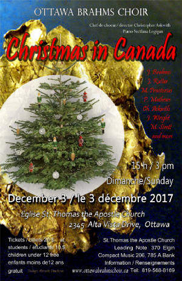
|
| Design: Marcela Pauckova |
The Advent Season brings joyful sounds and songs. The Ottawa Brahms Choir sang
with heart and soul, in festive atmosphere, their Christmas concert 2017, under the direction of Music Director Christopher
Askwith, and accompanist Svetlana Logigan. St. Thomas the Apostle Church was beautifully decorated in anticipation of
Christmas. We contributed and participated in a wonderful program of Christmas works, selected by music director Christopher
Askwith, among them, his own composition ‘Ave Maria’. The audience got to sing some of the favourite Christmas
songs. Svetlana treated us to ‘Waltz of the Flowers’ from the Nutcracker by P.I. Tchaikovsky, arrangement by Sergei
Taneyev. At the reception many guests expressed their appreciation of the concert while enjoying
lovely treats and drinks on beautifully laid out tables. Thank you Christopher, choristers,
and ringers: Kurt Ala-Kantti, supporting the Basses, and Luigi Carlo Petro, supporting the Tenors. Thanks
to amazing President Roxane Roy and board members for their dedicated support and generosity, thanks to all volunteers
for making time to come out and assist in duties, , with special mentioning of Nanci Askwith for selling tickets at the church
office and for all her voluntary support with husband Michael. And a very special thanks
to choir member and artist Marcela Pauckova for creating the Ottawa Brahms Choir Christmas 2017 poster and program. Program
Notes were prepared by Dr. Ken Currie. And finally, thanks to Don MacLaren for a fine recording
of our concert. The Ottawa Brahms Choir acknowledges with thanks and appreciation the media and sponsors,
ticket outlets, for their loyal support. They have been listed in our Christmas concert program 2017. Also a big thank you to Leo Heistek who together with Elisabeth Salm keep the webpage up-to-date. G. H.
The Ottawa Brahms Choir Spring Concert
| Click to enlarge |
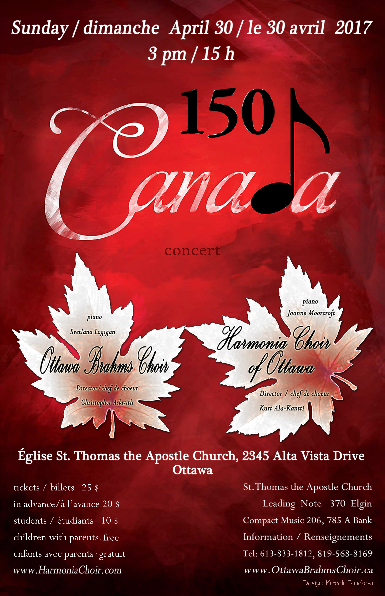
|
| Design: Marcela Pauckova |
The Ottawa
Brahms Choir and Harmonia Choir of Ottawa present a joint concert 'Canada 150'. Presenting music from across the
country, both serious and light-hearted, and featuring the premiere of a brand new arrangement of Ontario's own Wade Hemsworth's "The Black Fly Song". Tickets $25 at door; $20 in advance; students $10, (youth accompanying parents are free). Tickets at Leading Note, Compact Music, St. Thomas the Apostle Church Office, and from members
of the choirs. For info: Tel: 819-568-8169 or 613-833-1812.
Location :
St. Thomas the Apostle Church 2345 Alta Vista Drive,
Ottawa Sunday, April 30th, 2017, 3:00 p.m. (Information subject to change)
‘Celebrating Mozart’
Impressions (2016-12-04)
Mozart brought joy to the world with his music.Ottawa Brahms Choir presented ‘Celebrating Mozart’ – a concert of
wonderful selections of compositions by Mozart and composers who impressed him - with heart and soul! Thank you, Bronwyn Thies-Thompson, for lighting up the church hall with your beautiful voice. Svetlana, thank you for two special piano recitals and accompanying the choir with grace
and accomplishment. Thank you, Christopher for your choice of concert pieces
and direction of music. Thank you volunteers! Without you, the concert would
not have been possible. And a great thanks to the audience that turned
out in good numbers, and that so generously and warmly applauded. The reception
downstairs in the church hall was festive and engaging, and the generous contributions by choir members of food and drinks
was very much appreciated. A good time was had by all! Thanks to the board members
for all their efforts in preparation of the concert, and the many sponsors and the media who supported us. Thank you, Ken
and Marcela for a fine programme. Our wish for the New Year: that many new voices
will join us and strengthen us. We warmly
welcome new members! G.H.
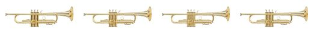
On Sunday, December 4th, at 3 pm, The Ottawa Brahms
Choir, under the direction of Christopher Askwith, will present their Holiday
Concert
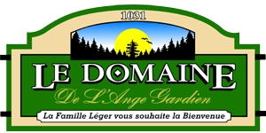
Ottawa
Brahms Choir "Musical Adventure" Retreat, October 22, 2016
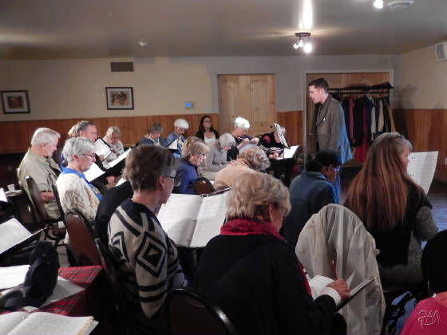
|
| Photo Marcela Pauckova |
Location : St. Thomas the
Apostle Church 2345 Alta Vista Drive, Ottawa Sunday, April 30th, 2016, 3:00 p.m.
| Spring Concert, April. 24th, 2016 at St.Thomas |
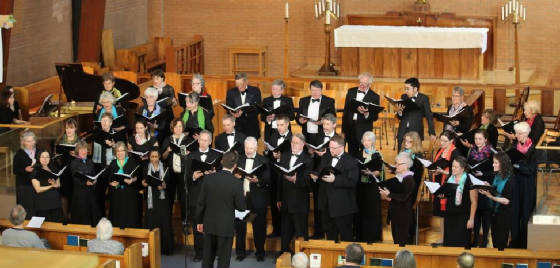
|
| (Click on image to enlarge) |
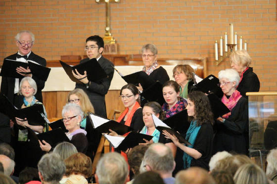
(Courtesy Gretel Harmson, April 29, 2016)
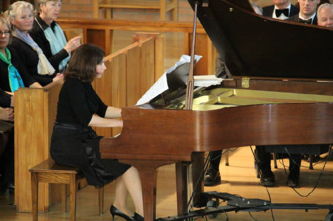
|
| Svetlana Logigan tickling the ivories... |
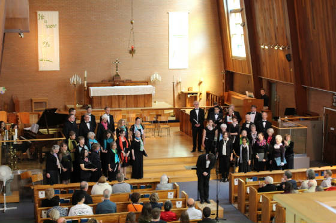
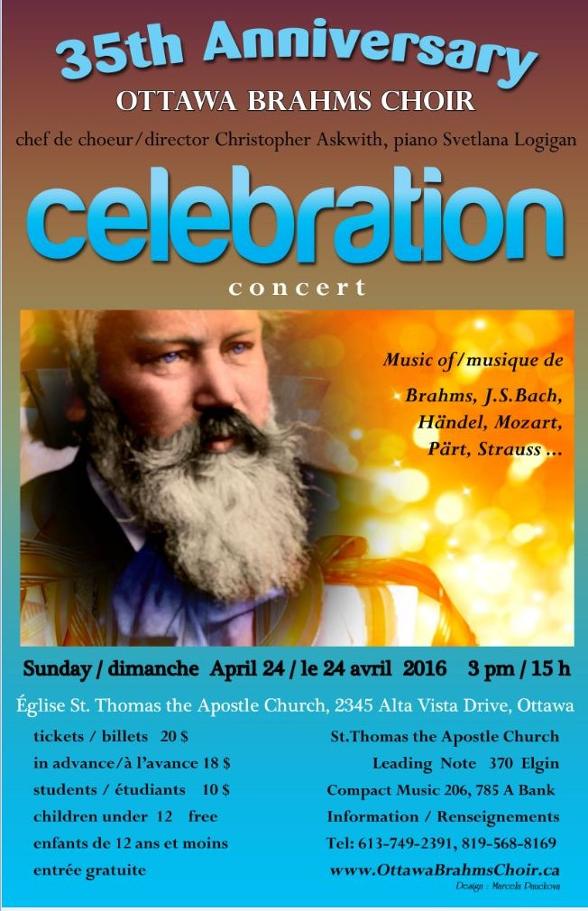
Ottawa Brahms
Choir Week-end Retreat March 12-13,
2016 Arnprior, Ontario
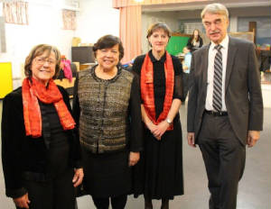
In this photo German Ambassador Werner Wnendt
(right) and his wife Dr. Eleonore Wnendt-Juber (second left) at the reception after the concert. Also Gretel Harmston, Pubilicity Director (left) and
Pegatha Taylor, singer (second right)
Patron of the Ottawa Brahms Choir, 2014-2015
On
Saturday 2 pm, December 5th, 2015, the Ottawa Brahms Choir, together with the Quodlibet Choir, presented
a Christmas program for residents and patients, in the chapel of the Elisabeth Bruyère Hospital in
Ottawa. 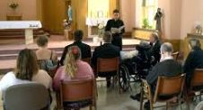
The
Ottawa Brahms Choir performed highlights from their Christmas Concert, a week earlier. The Quodlibet Singers presented the audience with a preview of their upcoming concert. At the end the audience
joined forces with the two choirs, singing traditional Christmas songs.
The Ottawa Brahms Choir Christmas Concert on Sunday, November 29th, 2015.
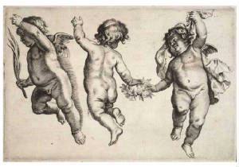
On Sunday, November 29th, at 3 pm, The Ottawa Brahms
Choir, under the direction of Christopher Askwith, will hold a special Christmas concert
‘Shepherds’ Christmas’ at St. Thomas the Apostle Anglican Church at 2345 Alta Vista Drive.
The choir is entering its 35th anniversary year. Tickets: Leading Note Music, 370 Elgin, 613-569-7888 Compact Music, 206 Bank, 613-688-2693 Compact Music, 785A Bank, 613-233-8922 For more information call 819-568-8169. www.OttawaBrahmsChoir.ca
The Ottawa Brahms Choir annual potluck will be on Friday, September 18th. 5:30 p.m.
(Early birds, after 3:30 p.m.)
Bring whatever you wish, or call me if you want to know what is already being brought. Bring a chair as I only have 4 or 5,
and your own alcohol if that is what you are drinking. Bring your singing voices too as we will probably do a sing-a-long. Address
- 199 Beaudoin st. Gatineau Take highway 50 to the Labrosse exit, go south (right) to Maloney Blvd, (first traffic lights after
railway track) turn left (east) to Achbar St. (first street after the traffic lights - these are near a furniture store
called Branchaud on the right) turn left (north) on Achbar and go right to the end where you have to make a left again, very
first house is mine, beige siding, big evergreen tree and a carport. Delphine Teillet (Merci Delphine!)
Annual General Meeting
Monday, April 20, 2015,
7:00 p.m.
Southminster United Church, 15 Aylmer Ave
Come as you are! Bring your ideas!
Ottawa Brahms Choir
Fruehlingskonzert ‘Springtime Melodies’ - Impressions On a beautiful Spring Day afternoon, April 19th 2015, the Ottawa
Brahms Choir presented its ‘Springtime Melodies’ concert in the sunlit St. Thomas the Apostle Anglican Church.
A loyal audience, among them many family members and friends, had gathered in the church to hear us. Under the direction of Christopher Askwith and with
Ioulia Blinova at the piano, the choir began its presentation of welcoming spring with Claude de Jeune’s
‘Reveci venir du Printemps’, a delightful and challenging piece of music for the choir. A very spirited series of songs
followed: ‘Der Mai ist gekommen’ (E.Geibel/W.Lyra), ‘Now is the month of Maying’ (T. Morley)
, ‘Die Nachtigall’ (F. Mendelssohn), ‘Il Bianco e Dolce Cigno (J. Arcadelt), ‘El Grillo’
(J. des Pres) and Fair Phillis (J. Farmer) . The beautiful and haunting ‘Chansons des Roses’ (excerpts from R.M. Rilke’s
poems set into music by M. Lauridsen) ended the first part of the concert. The attentive audience responded with
warm appreciation to our efforts and presentations. While the choir took a rest in chairs and church benches, the stage was prepared for
a special recital by our invaluable and supportive accompanists, Ioulia Blinova at the piano and Jenna Richards on violin,
who presented the Violin Sonata in A major by César Franck. They played with vitality, warmth and expertise.
The audience and choir responded with thunderous, enthusiastic applause. Our program continued with ‘Rise up, My Love’ (Healey
Willan), ‘Awake, Sweet Love’ (J. Dowland) and ‘Tanzen und Springen’ (H. H. Hassler). Then
both accompanists joined the choir for Johannes Brahms’ famous ‘Liebeslieder Walzer’ (Op. 52 and 65).
The choir sang the 18 Lieder with expression and much vitality. The audience responded with smiles and at times with chuckles
during this presentation. At the end of the last song, they broke into enthusiastic appreciating applause. Beaming
choristers thanked the audience; flowers were presented to musicians, conductor, and Yukiko Iwasaki, our Librarian, who is
moving with her family to Japan for a few years. Conductor Christopher Askwith addressed the audience and mentioned that for 2015, the
German Ambassador, His Excellency Mr. Werner Wnendt, has accepted to be the patron of the Choir for its 35th anniversary year.
The audience was invited to a reception downstairs in a spirit of celebration. The guests were greeted by beautiful
decorated tables laid out with refreshments and flowers. A very animating, elating reception took place, during which kudos were expressed by
the guests. Choir members and conductor were delighted that after months of rehearsals during the long winter months the concert
had gone so well. The
choir and conductor wish to express thanks to the audience, the volunteers, the media and the many sponsors for their support
in making this concert a very happy, successful event.
(Review by Gretel Harmston)
Spring
Concert
Springtime
Melodies
Sunday, April 19, 2015,
3:00 p.m.
St. Thomas the Apostle Church
2345 Alta Vista Drive,
Ottawa.
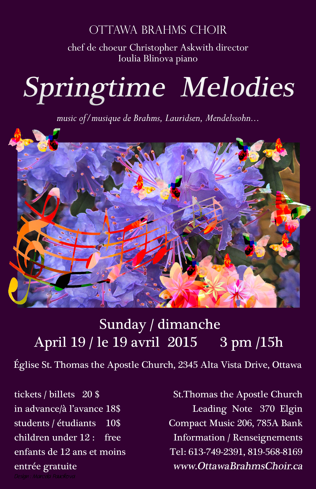
|
| (Design: Marcela Pauckova) |
Week-end Retreat March 14-15, 2015
Galilee Centre, Arnprior, Ontario
| View from a room |
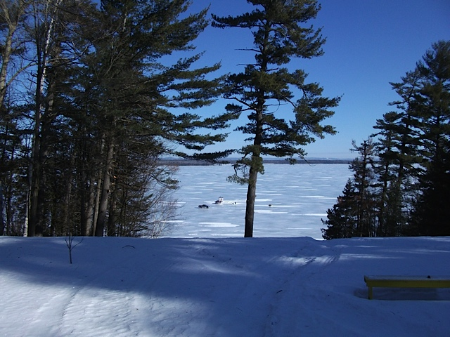
|
| Room with a view |
Galilee Centre... Location...
Intrepid members of Brahms choir join in re-enactment of WW1 Christmas Truce
"The Ottawa Brahms Choir participated in an invited
event organized by the Aviation Museum to mark the WWI Christmas Truce Dec. 24th, 1914. Since our choir was the only
one to sing on the first day of the event at 1 pm on Dec. 26th, the choir split into two groups and sang on opposite
sides in our 'trenches'. The German side had little Christmas trees that were lit as we sang. The museum provided helmets and military hats of both sides for some choir members to
wear. Visitors to the museum were invited to join either side and sing along. We sang 'Stille Nacht/Silent night, alternating
on each side, 'Oh Tannenbaum' (in German and French) and 'Oh come all ye Faithfull (in Latin, English French according to
personal choice). At the end of the singing both
sides cheered and moved from behind our barricades to meet in the middle and to greet, embrace and exchange gifts (chocolates).
Some singers engaged in a mock football/soccer game. It was a memorable event under the theme of reconciliation." (Review by G.H.)
More pictures in the Picture Gallery
Recreation of the "Christmas Truce of 1914” /
Reconstitution de la « trêve de Noël de 1914 »
| The Ottawa Brahms Choir in the Ottawa Citizen |
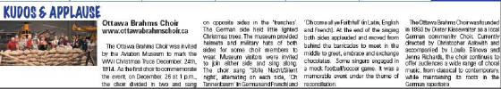
|
| (Click on image to enlarge) |
|
| With thanks to Gretel Harmston |
...and thanks! Christopher Askwith for
your wonderful selections, enjoyable rehearsals and successful debut concert! Choir for your hard work, and
singing your heart(s) out! Audience
for being there and being so appreciative! Julia Blinova for
all those notes and virtuosity at the keyboard! Jenna
Richards for helping out on the piano! Soloists Zoe Langlois, Colleen Woodhouse and Richard Langlois for your grand vocal interludes! Sieglinde for being a pillar
of strength, partner in crime and source of wisdom! John for your diligent efforts in the financial sector! Elisabeth for keeping the communication channels open! Yukiko for so ably keeping track of the music! Gretel for your publishing efforts over and above the call of duty! Marcela for designing a beautiful and striking
concert poster! Ken Currie for designing (again) the programme notes for the concert! Angela for taking
care of the choreography! Rosemary for coordinating the catering! Don McLaren for recording the concert! The volunteers for helping at the door and at the reception! Enjoy your Holidays! Leo Heistek,
30 November 2014, 4:45 PM
| Advent-ure Concert, 30 November 2014 at St.Thomas |
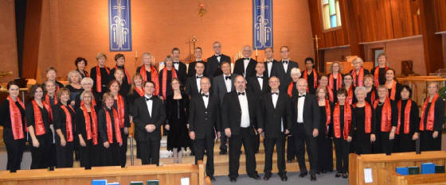
|
| (Click on image to enlarge) |
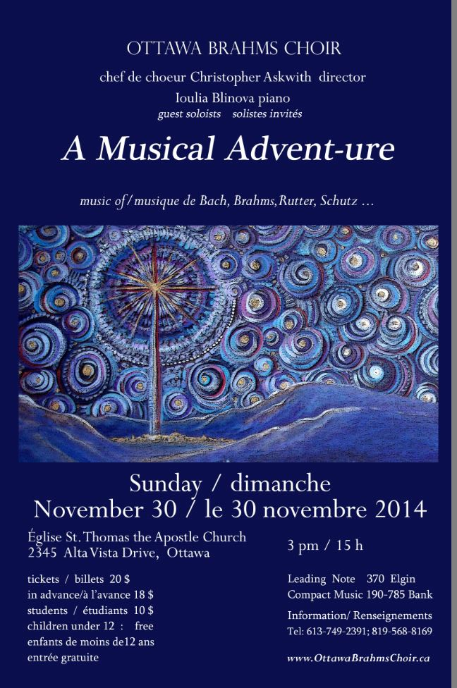
Click here to download programme
The Ottawa Brahms Choir will be on the Main Street Farmers Market
on Saturday, September 6th, 8am to 1pm, recruiting new members!
Monday night, April 28th, 2014, is our Annual General Meeting / Social. A time
for celebration after another succesful season! A time to contemplate what you would like the Ottawa Brahms
Choir to be and how you could contribute to it.
Monday, April 28th, 7:00 p.m.
Spring Concert, Sunday
April 27th, 2014
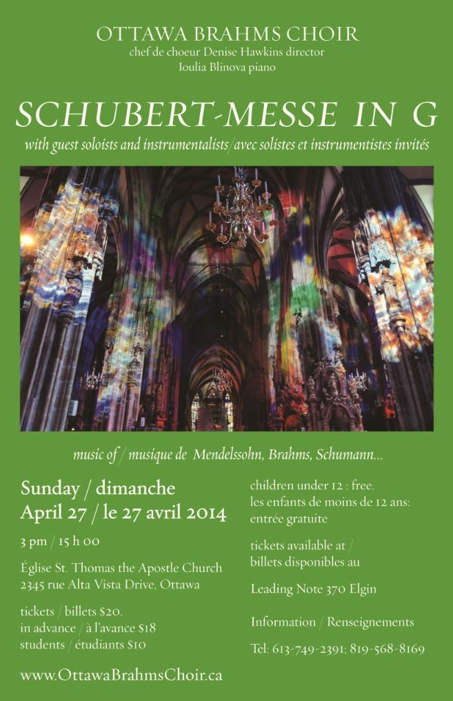
Click here for more information about the program and performers (PDF format)
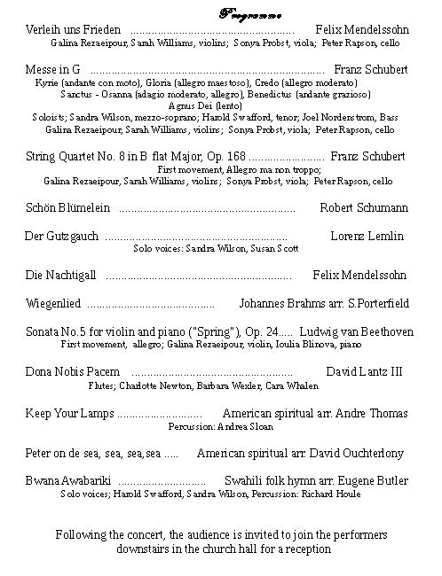
Ottawa
Brahms Choir Retreat Week-end March (14)-15-16, 2014 Galilee Centre, Arnprior,
Ontario
| View from a room |
|
| Room with a view |
Galilee Centre... Location...
This years pictures...
(Click here to download pdf poster file)
The Ottawa Brahms Choir will present their 2013
Christmas Concert under the direction of Denise Hawkins at St. Thomas the Apostle Church at 2345 Alta Vista
Drive, Ottawa. Accompanist: Ioulia Blinova.
Sunday December 1st, 2013, 3:00 p.m. For further
information, please contact 613-749-2391 and 819-568-8169
(Click here for Christmas concert review by G.H.)
Christmas Concert, 1 December 2013 at St.Thomas
Wassail!
The Ottawa Brahms Choir will be present at
the annual Main Farmers Market, Saturday, Aug 31th,
in search of new members. The Market is held in
the parking lot of Saint Paul University-corner of Main Street and Clegg. There is free parking on all the side streets in
the area.
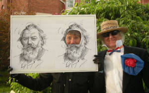
|
| In the picture with Brahms |
Join the Brahms look-a-like contest! For further
information, please contact 613-749-2391 and 819-568-8169
The Ottawa Brahms Choir annual picnic will be Tuesday Aug. 27th.
Bring whatever you wish, or call me if you want to know what is already being brought. Bring a chair as I only have 4 or 5,
and your own alcohol if that is what you are drinking. Bring your singing voices too as we will probably do a sing-a-long. Address
- 199 Beaudoin st. Gatineau Take highway 50 to the Labrosse exit, go south (right) to Maloney Blvd, (first traffic lights after
railway track) turn left (east) to Achbar St. (first street after the traffic lights - these are near a furniture store
called Branchaud on the right) turn left (north) on Achbar and go right to the end where you have to make a left again, very
first house is mine, beige siding, big evergreen tree and a carport. Delphine Teillet (Merci Delphine!)
(From our
special correspondent) "Our concert took place yesterday afternoon
on a beautiful sunny Sunday at St. Thomas the Apostle church. Our family and friends were there in full support and a happy
expectant great audience had gathered to hear our songs of Spring. Under Denise Hawkins enthusiastic baton, on one occasion
appearing with magnificent witche's hat, our choir sang a multitude of songs: by composers Hans Leo Hassler 'Tanzen und Springen',
Robert Schumann 'Schoen Bluemelein', Johannes Brahms 'three Zigeunerlieder', Felix Mendelssohn 'Hexenlied'. Our MC, JJ Moskau, introduced each section and deliverd historic interesting remarks, rendering
anecdotes and reading from a selection of poetry inspired and dedicated to the Danube by visiting poets. The Trio, Harold Swaffield, tenor, Laurent Fobelets (visiting from Belgium), baritone, and
Joel Nordenstrom, bass, gave a marvellous performance of Mozart's composition of 'Stille Stille' and 'Freundin ich komm mit
der Zither', which Dr. Kenneth Currie in his programme notes termed an expression of Mozart's raucous sense of humour, to
be sung in dialect and with rowdy musical wit. The audience and choir enjoyed and loved it and responded with happy enthusiastic
applause. We continued with three Hungarian Folksongs by Matyas Seiber,
which our conductor later declared to be our best performance. Vocal coach und music professor, Gloria Jean Nagy, had provided
and arranged for us Zoltan Kodaly's Peace song 'Békedal' which pleased many. Also well received were the Croatian folksong
'Plovi Plovi' and Romanian folksong 'Multi Ani' - a favorite birthday song meaning 'live many years'. A highlight was Ioulia Blinova and Rubi Jin at the piano performing Antonin Dvorak's Slavonic Dances (opus 46 #1,
op 72 #2, and Hungarian Dances by Johannes Brahms (#4 and #5). An appreciating enthusiastic applause followed this spirited
performance. A former choir member, Marcella Pauckova, had provided us with
three Czech songs by Vladimir Klusak which the choir sang with the best of their ability of pronouncing the Czech text; this
was followed by the Swabian folk song 'Muss I denn zum Stadtele 'naus' which is known also in the repertoire of Elvis Presley's
Wooden Heart and became a hit on YouTube. The concert ended with Johann
Strauss famous 'An der schoenen blauen Donau' - music of his famous waltz - (On the beautiful blue Danube) which we sang with
much heart and spirit. Guest soprano Clare Jackson and guest tenor Harold Swaffield added beautifully their voices with their
short solos. The audience appreciated it very much and thanked us with a long enthusiastic applause.
We all enjoyed the reception which followed where tables were filled with savouries and goodies
in dishes on beautiful tableclothes. Kudos and happy remarks were received and reunions with families and friends took place.
We ended our season in an uplifting spirit. Thanks to all volunteers who turned up to be there and make
the concert a success.
Thank you Denise for guiding us through this concert
programme and conducting long rehearsals with great patience with much humour and spirit! Many thanks to the vocal soloists:
Harold, Laurent, Joel and Clare. And many thanks to the piano virtuosos Ioulia and Ruby.
Let
me add that the weekend workshop in mid March at the Galilee Centre in Arnprior with a special Sunday morning workshop with
Laurence Ewashko did much to energize and prepare us for the concert.
Many thanks
also to all editors for publishing our announcement in their community news, in musical calendar and events calendars, to
all our sponsors and donors who supported us financially to make this concert possible. We
look forward to our next season and welcome many new members to join us! Enjoy Spring!"
Ottawa Brahms Choir
Retreat Week-end March (15)-16-17, 2013 Galilee Centre, Arnprior, Ontario
| View from a room |
|
| Room with a view |
with the Trio Pléiade and Guests
Seasonal Music of Buxtehude, Berlioz, Rachmaninoff
and Traditional Favourites
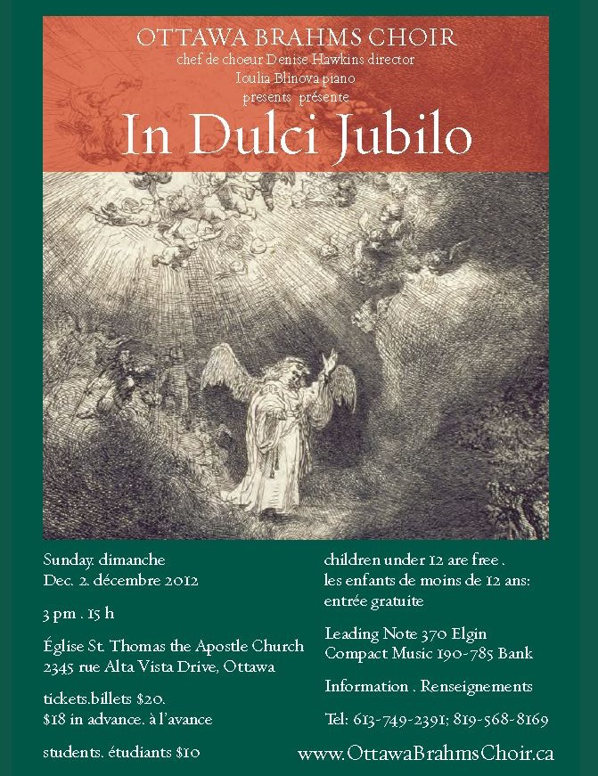
(From our special correspondent) The Christmas
concert "In Dulci Jubilo" under the enlightened direction of Denise Hawkins took place on Sunday afternoon, the
1st of Advent, in the lovely St. Thomas the Apostle Church. While it was heavily pouring outdoors with rain, the 45 member
Ottawa Brahms Choir gathered to greet the audience with its first song 'In dulci Jubilo '. The church was filled to capacity,
the atmosphere was warm. An afternoon of more singing and music making followed. Denise had provided for a joyful, challenging
programme of Christmas songs that included a Cantata by Dietrich Buxtehude 'Das Neugeborene Kindelein ', 'Ave Maria ' by Sergei
Rachmaninoff, 'l 'Adieu des Bergers à la Sainte Famille ' by Hector Berlioz, and much more. The ladies were shining
with the song 'Ein Kindlein in den Wiegen ' by D.G. Corner/Jon Kinyon, and the male choir presented with great fun 'My True
Love Gave to Me". The audience joined the choir for many traditional Christmas carols in French, German and English.
Trio Pléiade from Ottawa:
Anna Baksheeva, violin, Jean-François Marquis, cello, and Ioulia Blinova at the piano, as well as violinists Brigitte
Amyotte (member of Thirteen Strings) and Sean Kemp, (who has played with Academy of St. Martins in the Fields and the English
Chamber Orchestra) accompanied the choir in its presentation of Buxtehude 's 'Das neugeborene Kindelein ' . It was a challenging
piece of work well received by the audience. Trio Pléiade gave two impressive presentations of Ernest Chaussons 's
compositions to which the audience responded with enthusiastic applause. Our accompanist Ioulia Blinova provided solid support
throughout our singing. Dr. Daniel Ortuno-Stuehring, who sang this season in our choir, accompanied us on the organ during
audience carolling. He had come to Ottawa from Weimar where he has taught Music at the Franz Liszt University of Music. At
the invitation of Carleton University he has been teaching musicology at the Department of Music.
Following the concert the audience was invited
graciously by Leo, our President, to the reception downstairs. Participants were greeted with festively decorated tables laid
with trays of fruit, sweets, cakes, savouries, and vegetable dishes with dips. Refreshments were enjoyed by everyone. Our
president, as usual, standing on a chair to address the party with good humour and wit, presented his kudos to our conductor
Denise, the musicians, and the choir for a wonderful concert and thanked special choir members for various tasks fulfilled
to make this concert a success. He bade farewell to those choir members who will leave us and welcomed old members who will
be returning to our choir in our next season. A special chocolate birthday cake from the Peace Garden in the Market area was
rolled in on a tray to surprise Board member John Williams on his forthcoming 70th birthday. Leo stood close by John as just
a week earlier, the Board was invited to attend his own 70th surprise birthday bash. The cake was definitely a great hit for
John and everyone. The evening came to a happy close. It was great teamworkship!
Merry Christmas to our readers and many thanks again to all our supporters, sponsors,
volunteers, and the media who published our concert announcements..
Happy New Year to All!
Spring Concert, Sunday April 29th, 2012 Harmonia Choir of Ottawa, Ottawa Brahms Choir, Cross Town Youth
Chorus, Ottawa Percussion Ensemble
Under the direction
of Kurt Ala-Kantti Tickets: $10 students, $20 in advance and $25 at the door.
(From
our special correspondent) "The
Sunday afternoon concert, CARMINA BURANA by Carl Orff, under the energetic direction of Music Director Kurt Ala-Kantti
with participation of happy choristers of three choirs: Harmonia Choir of Ottawa, Ottawa Brahms Choir,
and Cross Town Youth Choir and guests drawn from Nepean Choir and Tone Cluster
, and with the tremendous support from most accomplished, professional fine musicians and soloists from the Ottawa scene,
was a great success. Cara Gilbertson, Soprano, delighted choir and audience with her wonderful
nightingale-like voice. She gave a moving performance; Zachary Windus, Counter-tenor gave a good performance
as roasted swan; James 0'Farrell, Baritone was amazing in his wide range of vocal strength. They delighted
the audience no end. Two consummate pianists at two pianos, keeping a sharp eye on the direction of the conductor: Joanne
Moorcroft and Ioulia Blinova. The percussionists were tops, very professional, very in tune and
tempo with the conductor's direction. They were Alvaro de Minaya, Angel Araos, Alec
Joly Pavelich, and Owen Stanton-Kennedy. Kurt really was lucky and convincing to get such fine soloists
and musicians to join our concert and support us. You
had to be in the Church Hall of St. Thomas the Apostle, where every seat was taken and people had to stand or sit on stairs
leading up to the balcony, squeeze into benches, to witness the reaction of the audience when the haunting last notes of 'Oh
Fortuna' had ended. A spontaneous, enthusiastic thunder of applause erupted, everyone rose to their feet in acclamation! The
wonderful appreciation of the audience for a good performance of all three choirs - the male chorus stands out, they had the
most difficult part - under Kurt's direction was so gratifying. I would like to add that the Ottawa Brahms Choir
conducted many hours of rehearsals under the wise direction of Denise Hawkins, who has accepted the position
as our new conductor. Furthermore, that we were thrilled to take part in a workshop with Lisette
Canton, Artistic Director of the Ottawa Bach Choir, prior to the concert date. And last but not
least, that Cross Town Youth Choir under the direction of Kurt Ala-Kantti won Gold medal
during the Kiwanis Music Festival Competition. Remembering the applause, the enormous energy of the conductor to draw every note out of us…. the singing
of the various choral parts, to be part of such an event is truly gratifying and enriching. It was a memorable afternoon."
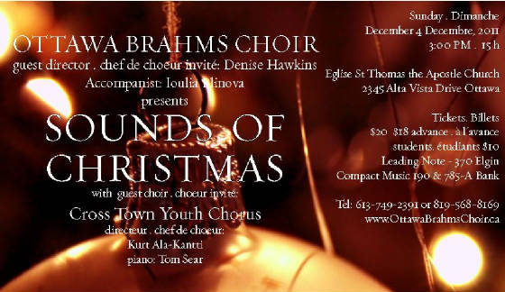
Sounds of
2011
The Ottawa Brahms Choir with guest
choir Cross Town Youth Chorus will present Sounds of Christmas under the direction of conductors
Denise Hawkins and Kurt Ala-Kantti on Sunday, December 4th, 2011 at 3:00 pm at St. Thomas the Apostle Church at 2345 Alta
Vista Drive, Ottawa. Accompanists are Ioulia
Blinova and Tom Sear at the piano, and Denise Hawkins at the organ. Tickets: $10 students, $18 in advance and $20 at the door. Tickets available from choir members, Leading Note, 370 Elgin and Compact Music, 190 &785-A
Bank. For further information, please contact 613-749-2391 and 819-568-8169
The Ottawa Brahms Choir Annual Potluck
BBQ
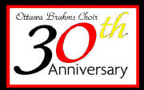
with
the Harmonia Choir of Ottawa Ein Deutsches Requiem
Presenting Brahms most loved work for the occasion
of our 30th anniversary! Saturday, April 30, 2011 - 7:30 p.m. St. Thomas Anglican Church, 2345 Alta Vista, |
| Download poster or Program notes |
Tickets: $20 - 18 - 10 Leading Note, 370 Elgin street Compact Disc, 190 & 785-A
Bank street |  | | Johannes Brahms | 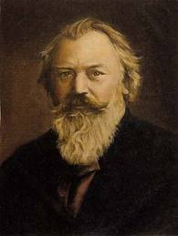
| | 7 May 1833 - 3 April 1897 |
| | |
|
(From
our special correspondent) The 30th Anniversary concert,
Ein Deutsches Requiem by Johannes Brahms, took place Saturday, April 30th, 7:30 pm at St. Thomas the Apostle Anglican Church
and was a great success. The Ottawa Brahms Choir and Harmonia Choir of Ottawa with soloists Soprano Devon Wastle, and Bass
Jean Sébastien Kennedy gave a wonderful performance to a close to 300 in number appreciative audience. The soloists
raised the spirits of the 100 participating choristers; and with a great performance of the two accompanists at the piano,
Ioulia Blinova and Joanne Moorcroft, Director Kurt Ala-Kantti led the two choirs and guests
to new heights. The audience was full of praise at the reception following the concert. President of Ottawa Brahms Choir, Leo Heistek,
in a spontaneous address welcomed guests and thanked Director Kurt Ala-Kantti, as well as the Harmonia Choir for joining us
in this special concert. Founder of the Johannes Brahms Choir, Dieter Kiesewalter, was welcomed warmly. Dieter had nothing
but praise for the performance of the choir, the soloists and two accompanying pianists. Kudos were expressed to Board members
for their efforts in preparation of this concert. *The Director of the Ottawa Bach Choir, Dr. Lisette Canton, who had held a workshop
with the combined choirs two weeks prior to the concert date attended the concert and gave Director Kurt Ala-Kantti her warm
approval of the choirs' performance. It was a memorable evening.
Christmas Favourites! with guests: The Polished Brass Quintet Sunday, November 28, 2010 - 4:00 p.m. St. Thomas Anglican Church, 2345 Alta Vista
| Poster |
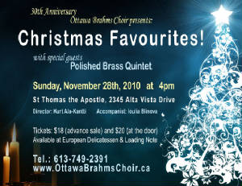
|
| Click to enlarge |
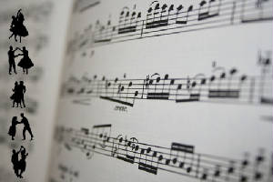
To
Song and Dance! Featuring Liebeslieder Waltzes ~ Brahms and more! Sunday, April 25, 2010 - 4:00 p.m.
St. Thomas Anglican
Church, 2345 Alta Vista
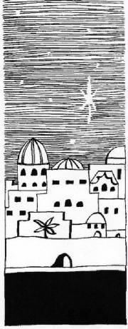
Magnificat!
with Christmas Favourites
Featuring Deutsches
Magnificat ~ Schütz
Magnificat Op. 69,
#3 ~ Mendelssohn with
guests:
Choirs
of St. Thomas Anglican Church Sunday, November 29, 2009 - 3:00 p.m. St. Thomas Anglican Church, 2345 Alta Vista St. Thomas Anglican Church, 2345 Alta Vista
Handel's Messiah
with
Harmonia Choir of Ottawa
Elbmesne Ensemble
Dayna Lamothe,
soprano, D. Kai May, countertenor
Keith Gomes, tenor, Jean Sebastien Kennedy, bass
Sunday
April 26, 2009 - 3:00 p.m.
St Thomas the Apostle, 2345 Alta Vista Dr.
Brahms and his Legacy
with
elbmesne ensemble
Keith Gomes, tenor Rachel Eugster, soprano
Sunday, April 13, 2008 - 3:00 p.m. St Timothy's Presbyterian Church
Celebrate Easter and Spring
Jiri Hlavacek, director, Ioulia Blinova,
accompanist Sunday April 1st, 2007 St. Timothy’s
Church, 2400 Alta Vista Drive Admission: $15 at the door, $12 in advance, children 12 and
under free. Advance tickets ($12) are available at: - Leading Note, 370 Elgin St.
- European Delicatessen,
1541 Merivale Rd., at of Capilano Dr.
------------------------------------------------------------------------------------ Sunday December 10, 2006, 3 P.M. Christmas Concert
Featuring the Czech Christmas Mass (also known as the Bohemian
Shepherd’s Mass; performed in English) by Jakub Jan Ryba, followed by German Christmas music. Jiri
Hlavacek, director. - Judith Vachon, Soprano
- Joanna Crilly, Alto
- Chin Yeung, Tenor
- Henk
Huizenga, Baritone
- Julia Blinova, Accompanist
Location: City View
United Church, 6 Epworth Ave. Admission: $18 at the door, $15 in advance, children 12 and
under free. Advance tickets ($15) are available at: - European Delicatessen, 1541 Merivale Rd., corner of Capilano
Dr.
- Handa Travel in the Billings Bridge Plaza Shopping Centre
---------------------------------------------------------------------- Sunday April 30, 2006, 3 P.M. The Spring Concert will feature selections by Mozart, Brahms, Mendelssohn and others. Guest artists
will include the Swiss Montagna Singers and Julia Blinova, piano. Jiri Hlavacek will be the guest conductor.
Location: St. Timothy’s Church, 2400 Alta Vista Drive Admission:
$15 at the door, $10 in advance, children 12 and under free. Advance Tickets are available at Compact Music. --------------------------------------------------------------------------------- Sunday December, 2005, 3 P.M. 25th Anniversary Christmas Sing-Along Concert International Christmas
Carol Concert and Sing-Along with the Audience, including the concert world premiere of a new arrangement by Rohahes of the
Huron Carol.
With the Alpentrio, soloist Stanley Ralph and pianist Julia
Blinova.
Admission: $5 Southminster United Church (corner of Bank St & Aylmer
Ave.) ---------------------------------------------------------------------------------- Sunday November 13, 2005, 3 P.M. 25th Anniversary
Gala Concert
Featuring music from Brahms' Ein Deutsches Requiem and Franz Joseph Haydn's Te Deum in
C major “For the Empress Marie Therese”
with special guests Barbara Bolte, oboe, and
members of the Chorale du Conservatoire de musique de Gatineau Southminster
United Church (corner of Bank St & Aylmer Ave.) Tickets: $15 in advance, $20 at the door;
available at CD Warehouse, 1383 Clyde Ave., and Leading Note, 370 Elgin St. --------------------------------------------------------------------- Sunday April 24, 2005, 3 P.M. First 25th Anniversary
Gala Concert
Spring and Brahms - Telemann: Schoolmaster Cantata
- Brahms:
Lieder and Romanzen and Zigeunerlieder
- International Spring Madrigals and Folksongs
- Helmut Seemann: Two Songs
(composed for the OBC's 25th anniversary; world première)
With guests: Alpentrio
Les Baroques Mistérieuses from Carleton University
Croatian
Folk Music Ensemble Croatoan
Julia Blinova, piano Southminster United Church, Bank
Street at Aylmer Ave.
Admission: $10 in advance, $15 at the door, children 12 years and under free
Ticket Information:
(613) 731-7700 or from choir members After the Sunday Spring Concert, the Ottawa Brahms Choir invites
the guests and the audience to a reception with cakes and cookies, coffee, tea, etc. in the “Ladies'
Parlour’ on the second floor of the Southminster United Church. Helmut Seemann: Two Songs Among the highlights of our Spring Concert is the première of
two songs composed as a gift to the Ottawa Brahms Choir by longtime OBC choir member Helmut Seemann: - Wir sind
nicht alt (We are not old)
- In A minor for mixed choir with piano. Wir sind nicht alt is a
gentle marching call of wisdom to the younger generation, with a lively climax demonstrating the creativity and vitality of
Helmut Seemann's musical ideas.
- Frohsinn (Happiness)
- In A major for mixed choir with piano.
The song Frohsinn is composed in a pleasant and changing, sometimes accentuated and sometimes softly flowing waltz
rhythm. It starts with a question: Who knows today about Gemütlichkeit (coziness)? It then states that there
are no more humourists around. It praises engagement and idealism and advises us to try this recipe: It will certainly make
us happy and creates a convincing demonstration of the composer's skills. And the song is sure to delight the audience.
|